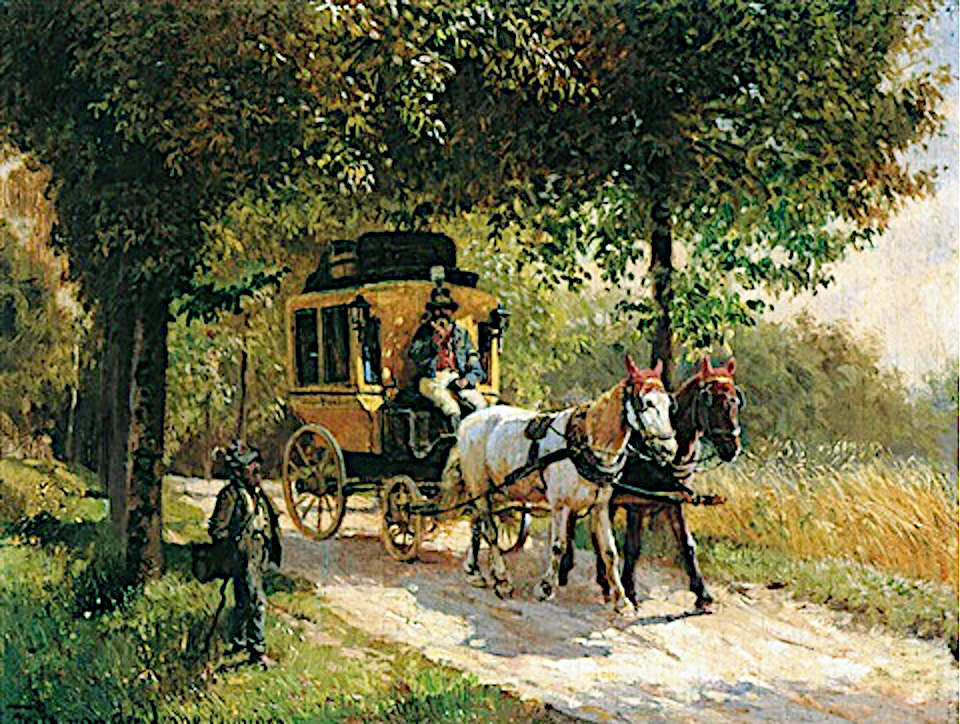
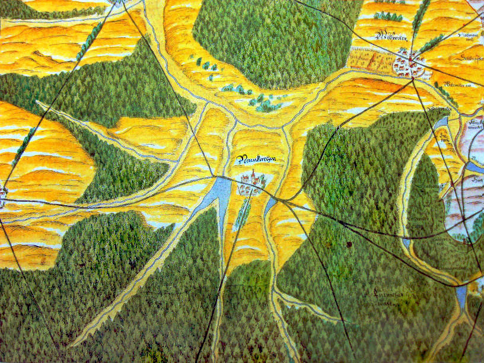
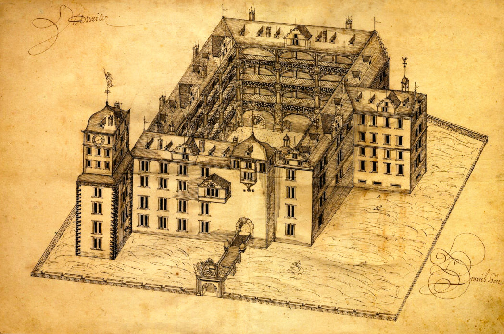
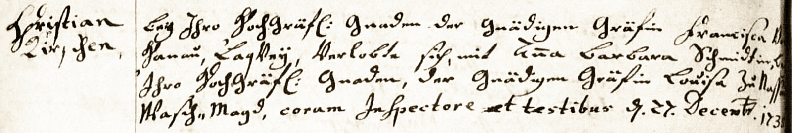
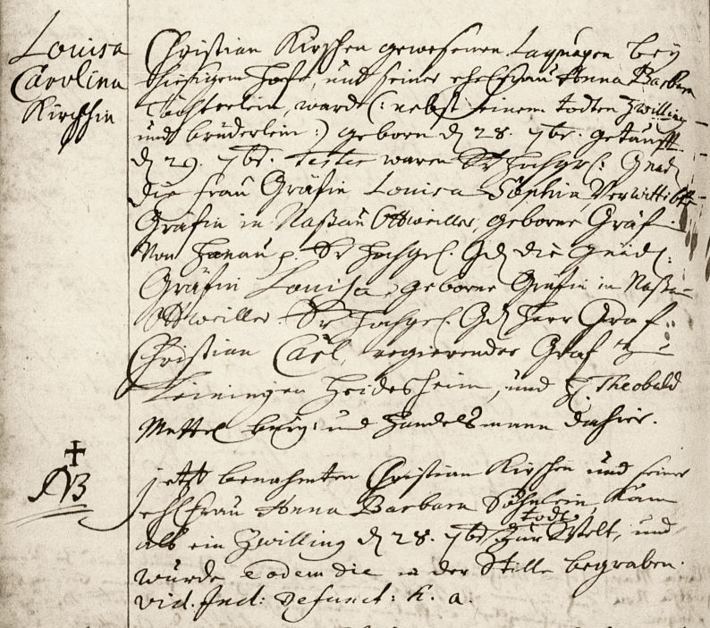
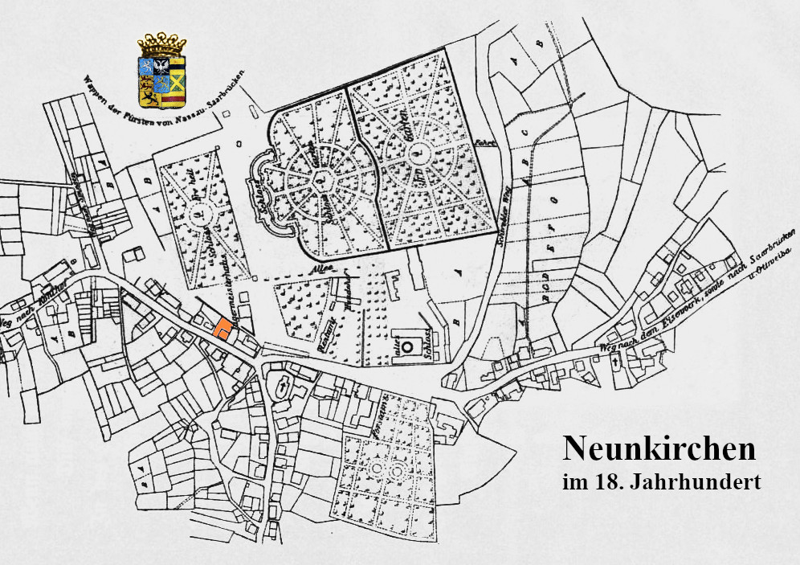
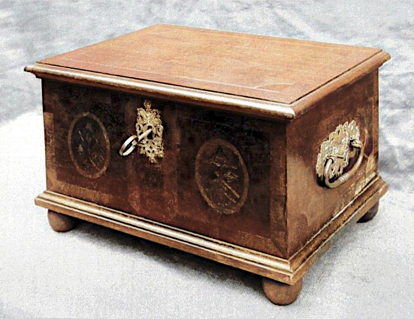

Mit der Postkutsche unterwegs
Die Familie Schlessmann Teil 2
Ausgerechnet Neunkirchen!
Neukirchen ein Schloß auf einem Berge neben einem Dorfe gleiches Namens.
Als Christoph Schlessmann um die Mitte des 18. Jahrhunderts in Neunkirchen ankam (von Ortsfremden auch Neukirchen genannt), gehörte der Ort zur Grafschaft Ottweiler, die mitten im Fürstentum Nassau-Saarbrücken lag. Christoph reiste wahrscheinlich mit der Postkutsche, die das beliebteste Fortbewegungsmittel in jener Zeit war. Postkutschen waren zwar praktisch, aber langsam und äusserst unbequem. Sie waren nicht gefedert, und die oft eng zusammengequetschten Reisenden saßen auf harten Holzbänken.
- Kosmographische Nachrichten und Sammlungen
auf das Jahr 1748
Neunkirchen war damals ein kleines, unbedeutendes Dörfchen. In der gesamten Meierei Neunkirchen, bestehend aus Neunkirchen, Wellesweiler und Spiesen, lebten lediglich 69 Bauern mit ihren Familien, also etwa 600 Bewohner, wenn man Ehefrauen, Kinder und Bedienstete hinzuzählt. Nur ein Bewohner war wohlhabend, der Rest arm. "Die Hauptnahrung bestehet in der Viehzucht und schlechtem Ackerbau“ heisst es in der „Tabelle der Meyerei Neunkirchen".

Die einzige Attraktion des Dorfes für einen jungen Schreiner wie Christoph Schlessmann war (zumindest zu Anfang) das neue Schloss. Der regierende Landesfürst Wilhelm Heinrich von Nassau-Saarbrücken (1718-1768) war ein leidenschaftlicher Bauherr. "Er war groß als Baumeister auf Erden, größer aber war er in den Herzen der Bürger“ steht auf seinem Grabmal. Das war wohl nicht übertrieben. Fürst Wilhelm Heinrich liess bauen was das Zeug hielt: Schlösser, Kirchen und repräsentative Wohnhäuser. Wenn ihm etwas zu alt vorkam, wurde es kurzerhand abgerissen.
Alte Karte von Neunkirchen
Dieses Schicksal traf auch im Jahre 1752 das alte Neunkircher Renaissance-Schloss. Der Fürst begann umgehend mit dem Bau eines neuen Barockschlosses im Jahre 1753. Dafür brauchte er mehr Handwerker, als sein eigenes Fürstentum zur Verfügung stellen konnte, und er lockte mit entsprechenden günstigen Konditionen zahlreiche Experten aus anderen Regionen und Ländern an. Wahrscheinlich folgte auch Christoph diesem Ruf.
Johann Christoph Schlessmann und Louisa Carolina Kirsch
Am 29. November 1757 heiratete Christoph Schlessmann in Neunkirchen die 15 Jahre jüngere Louisa Carolina Kirsch (1736-1810), die älteste Tochter von Christian Kirsch und dessen Ehefrau Anna Barbara Schmidt. Der Heiratseintrag im Kirchenbuch lautet wie folgt:
Christoph Schlessmann von Werben aus der alten Mark Brandenburg gebürtig, ist am 29.11.1757 A.C. mit der von Ihm emprognierten Louisa Carolina Kirschin, Christian Kirsch, Einwohners dahier ältesten Tochter in der Betstunde copulieret worden.
Als die beiden heirateten, war Louisa also bereits schwanger. Geplant war das wohl nicht. In dem Eintrag steht weder Christophs Beruf noch wird ein Status als Bürger angegeben. Dies änderte sich aber schnell: Er war schon bald Hofschreinermeister für die Fürsten von Nassau-Saarbrücken. Louisa war kein gewöhnliches Mädchen vom Lande. Sie war am Fürstenhof aufgewachsen, wo ihre Eltern privilegierte Positionen hatten.

Das Ottweiler Schloss
Zeichnung von Heinrich Höer, 1617
Von Fürsten und Schlössern
Die Eltern unserer Vorfahrin Louisa standen beide in den Diensten der Herrschaft Ottweiler und lebten im Ottweiler Schloß, wo auch alle ihre Kinder aufwuchsen. Der Vater, Johann Christian Kirsch (1679-1760), stammte aus Beutersitz in Sachsen. Man weiss, dass sein Vater Martin hiess und Gärtner war, aber mehr lässt sich nicht herausfinden. Johann Christian Kirsch arbeitete zuerst als Lakai für Gräfin Franziska Albertina von Hanau-Lichtenberg (1662-1736). Nach deren Tod wurde er Fruchtverwalter und war für die Getreidefelder der Herrschaft Ottweiler verantwortlich. Er sorgte dafür, dass die Untertanen ihr Getreide ordnungsgemäß ablieferten und dass die Rechnungen stimmten.Anna Barbara Schmidt (1708–1752), Louisas Mutter, war die Kammerdienerin von Gräfin Louisa Sophia von Hanau-Lichtenberg (1662-1751). Die beiden hatten eine sehr enge Beziehung, die sich nicht so ohne Weiteres erklären lässt. Gräfin Louisa war mit dem Grafen Friedrich Ludwig von Nassau-Ottweiler (1651-1728) verheiratet.
Barbara Schmidts Vater, Johann Nicolaus Schmidt, war Hochgräflich-Nassauischer Förster und Jäger am alten Schloss in Neunkirchen. Er hatte - logischerweise - enge Beziehungen zum Fürstenhaus und wurde von seinen Arbeitgebern sehr geschätzt.

1636 Verlobung
Anna Barbara und Johann Christian Kirsch verlobten sich am 27. Dezember 1735 und heirateten am 17. Januar 1736.
Im Heiratseintrag heisst es dann:
Anno MDCCXXXVI. Christian Kirschen, dermahliger Laquay bey der Hochgebohrnen Gräfin Francisca Albertina zu Hanau, weyland Martin Kirschen gewesenen Einwohners und Gärtners zu Beütersitz Chur-Sächsischer Jurisdiction hinterlassener ehl. Sohn, des Schneider-Handwercks, wurde, nach dreymahliger Proclamation, den 17. Januar ehlich copulirt, mit Anna Barbara Schmidin, bey der Hochgebohrnen Gräfin Luisa zu Nassau in Diensten, weyl. Johann Nicolaus Schmidts, gewesenen Einwohners und Herrschaftl. Försters zu Neunkirchen hinterlassener ehlichen Tochter.
Das Paar hatte fünf Kinder, die alle in Ottweiler geboren wurden. Nur Louisa und Alexandrina erreichten das Erwachsenenalter.
» Johann Christian Kirsch (1679–1760)
heiratete Anna Barbara Schmidt (1708–1752) in Ottweiler 17.01.1736
heiratete Anna Barbara Schmidt (1708–1752) in Ottweiler 17.01.1736
und sie hatten die folgenden Kinder::
| Louisa Carolina Kirsch | 28.09.1736 – *Ottweiler |
23.03.1810 †Neunkirchen |
h. Johann Christoph Schlessmann in Neunkirchen 29.09.1757 | |
| Söhnchen Kirsch | 28.09.1736 – *Ottweiler |
28.09.1736 †Ottweiler |
(totgeborener Zwilling von Louisa Carolina) | |
| Dorothea Charlotta Kirsch | 04.06.1740 – *Ottweiler |
04.07.1742 †Ottweiler |
Zwei Jahre alt | |
| Wilhelm Friedrich Christian Kirsch | 11.07.1742 – *Ottweiler |
30.11. 1746 †Ottweiler |
Vier Jahre alt | |
| Alexandrina Carolina Luisa Kirsch | 06.12.1745 – *Ottweiler |
11.06.1815 †Neunkirchen |
h. Georg Philipp Anschütz in Neunkirchen 11.06.1765 |
Die Kirsch-Kinder wurden "bey Hofe", also im Schloss, getauft. Bei ihren Taufen versammelten sich stets etliche adelige Taufzeugen, die zur unmittelbaren Familie der Gräfin Louisa gehörten. Sie reisten teilweise von weit her und waren die Namensgeber der Kinder. Bei der Geburt des Söhnchens Wilhelm Friedrich Christian im Jahre 1742 war der hauptsächliche Taufzeuge sogar der regierende Fürst Wilhelm Heinrich von Nassau-Saarbrücken (1718-1768) und fünf weitere illustre Zeugen.

1736 Taufe Louisa Carolina Kirsch
im Kirchenbuch Ottweiler
Ein solcher Aufwand für die Kinder eines Fruchtverwalters und einer Zofe ist, gelinde gesagt, ungewöhnlich, aber Gräfin Louisa kannte Barbaras Eltern. Da Barbara mit 11 Jahren ihre Mutter verlor, ist es möglich, dass die kinderlose Gräfin das Mädchen bei sich aufnahm und sie wie eine Tochter behandelte.
im Kirchenbuch Ottweiler
Unsere Vorfahrin Louisa Kirsch wurde am 29. September 1736 in Ottweiler geboren, zusammen mit einem toten Zwillingsbruder. Ihre Taufzeugen waren:
- Gräfin Louisa Sophie von Hanau-Lichtenberg, die Namensgeberin
- Louise von Nassau-Ottweiler (1686-1773), die Stieftochter von Gräfin Louisa
- Christian Carl Graf zu Leiningen-Heidesheim (1695-1766), der Neffe von Gräfin Louisa
- Theobald Mettel, Perückenmacher in Ottweiler und ein reicher Mann, der später Bürgermeister wurde. Seine Tochter Sophia Maria Mettel war die erste Frau unseres Vorfahren Georg Christoph Lichtenberger (1722–1773)
Nachdem die Gräfin Louisa im Jahre 1751 gestorben und das Schloss Ottweiler abgerissen worden war, zog die Familie Kirsch zurück nach Neunkirchen, wo die Verwandten von Louisas Mutter Barbara wohnten. Diese starb nur ein Jahr später, am 26. Mai 1752.
Ihr Sterbeeintrag lautet:
Frau Anna Barbara Kirschin. H. Christian Kirschen, gewesenen Kammer Laquayen bey der gnädigen Graefin Louisa sel. Andenkens zu Ottweyler, ehel. Hauß Frau, starb plötzlich, da sie von einem Landstreicher eine Purgierung gekauft und solche eingenommen, welche allzustark geweßen; so daß sie in zwey mahl 24. Stunden den Geist mußte darüberauf geben, welches geschehen den 26ten May und wurde darauf den 28ten ejusdem auf das Fest Trini. beerdiget, alt 45 Jahr 3 Wochen u. etl. Tag
Am 22. Mai 1760 starb auch Louisas Vater:
1760 Joh. Christian Kirsch. Ein alter Greiß, welchen der Schlag vor etl. Jahren in der Wieß zu Wiebelskirchen gerühret, welche er im FrühJahr butzen wollen, und die gantze Nacht durch in der Wieße in groser Kält liegen blieben biß des andern Tages, da man ihn gesucht und ganz elendig gefunden starb endlich den 22ten May nachdeme er etl. Jahre, nachdeme Ihn der Schlag gerühret, ganz kindisch geweßen, und ward den 24ten ejusdem beerdiget. Alt 79 Jahr 1. Monath und 8 Tag.
Zurück zu Christoph Schlessmann und Louisa
Angesichts der besonderen Situation, in der sich Christoph und Louisa befanden, ist es nicht verwunderlich, dass sie sich zueinander hingezogen fühlten. Beide waren "Aussenseiter" in dem kleinen Dorf Neunkirchen. Louisa, die genau wie ihre Mutter ihre Kindheit in einem Schloss mit der "besten Gesellschaft" verbrachte, hätte sich schwerlich dazu durchringen können, einen der örtlichen Bauernburschen zu heiraten, die sie ihrerseits wahrscheinlich auch nicht als eine brauchbare Hausfrau sahen.Christoph war, wie Louisas Vater, ein Fremder, der mit Niederdeutsch aufgewachsen war und den lokalen Dialekt wahrscheinlich nicht auf Anhieb verstand. Ob eine Rolle als Familienvater wirklich in seiner Lebensplanung war, sei dahingestellt. Jedenfalls hatten er Louisa fünf Kinder, von denen vier früh verstarben. Nur der Sohn Peter überlebte.
» Johann Christoph Schlessmann (1721–unbekannt)
heiratete Louisa Carolina Kirsch (1736–1810) in Neunkirchen 29.11.1757
heiratete Louisa Carolina Kirsch (1736–1810) in Neunkirchen 29.11.1757
und sie hatten die folgenden Kinder::
| Heinrich Rudolph Schlessmann | 03.04.1758 – *Neunkirchen |
20.01.1765 †Neunkirchen |
||
| Catharina Louisa Schlessmann | 18.05.1761 – *Neunkirchen |
20.01.1765 †Neunkirchen |
||
| Johannetta Charlotta Schlessmann | 20.02.1764 – *Neunkirchen |
10.05.1764 †Neunkirchen |
||
| Johann Peter Schlessmann | 02.05.1765 – *Neunkirchen |
24.04.1829 †Neunkirchen |
h. Jakobine Louise Philippine Lichtenberger in Neunkirchen 1791 | |
| Georg Christian Schlessmann | 03.09.1767 – *Neunkirchen |
20.10.1767 †Neunkirchen |

Goethe auf der Terrasse
des Schlosses zu Neunkirchen
Neunkirchen wächst
Immerhin wurde Neunkirchen im Laufe der Zeit größer. 1764 war die Einwohnerzahl der Meierei Neunkirchen auf etwa 1250 Einwohner angewachsen. Man hatte einen protestantischen Geistlichen (das war unser Vorfahre Georg Christoph Lichtenberger) und alle möglichen Handwerker - inklusive drei Schreiner und 12 Gastwirte. Das neue Neunkircher Schloss, das erst 1765 fertig gestellt wurde, war immer noch die Hauptattraktion des Dorfes. Es war ein imposanter Bau, der nur im Herbst von Jagdgesellschaften des Fürsten benutzt wurde und gelegentlich auch berühmte Besucher anzog. 1770 besuchte Johann Wolfgang von Goethe das Schloss. Seine Beschreibung in "Dichtung und Wahrheit" gibt einen guten Eindruck von Neunkirchen in der Nacht:
Ich überließ meinen Freund einem glücklichen Schlafe und suchte das höher gelegene Jagdschloss. Es blickt weit über Berg und Wälder hin, deren Umrisse nur an dem heitern Nachthimmel zu erkennen, deren Seiten und Tiefen aber meinem Blick undurchdringlich waren. So leer als einsam stand das wohlerhaltene Gebäude; kein Kastelan, kein Jäger war zu finden. Ich saß vor den großen Glastüren auf den Stufen, die um die ganze Terrasse hergehn. Hier, mitten im Gebirg, über einer waldbewachsenen finsteren Erde, die gegen den heitern Horizont einer Sommernacht nur noch finsterer erschien, das brennende Sternengewölbe über mir, saß ich an der verlassenen Stätte lange mit mir selbst und glaubte niemals eine solche Einsamkeit empfunden zu haben.

Schlessmann-Residenz, orange markiert

Christoph Schlessmann war - wie sein Vater - ein vielseitiger Mann. Er arbeitete , wie oben erwähnt als Schreinermeister und wurde später auch Gastwirt.
Auf einer Karte aus dem 18. Jahrhundert ist bereits das spätere Wohnhaus der Familie Schlessmann in der Markstrasse 6 als Grundriss zu erkennen.Wahrscheinlich wurde es von Christoph und Louisa erworben. Das Haus blieb über Generationen in der Familie. Es steht immer noch, wurde aber im Laufe der Zeit mehrfach umgebaut.
Truhe von 1751
Er kam... und ging wieder
Irgendwann nach der Geburt des jüngsten Kindes machte Christoph Schlessmann sich auf den Weg, nach Werben, um Erbschaftsangelegenheiten zu regeln. Er kam aber nie dort an und kehrte auch nicht nach Neunkirchen zurück. In Christian Schlessmanns Familienchronik steht: "Alle polizeilichen und privaten Nachforschungen nach seinem Verbleib blieben erfolglos ; er blieb für immer verschollen". Christian hatte diese Informationen von seinem eigenen Großvater.Am 23. März 1810 starb Christophs Frau Louisa in Neunkirchen. Der einzige Sohn Peter heiratete 1791 die Pfarrerstochter Philippine Lichtenberger. Und die ereignisreiche Geschichte geht hier weiter:
» Zu Teil 3 Peter und Philippine Schlessmann
» Teil 1 Peter und Anna Schlessmann
Teil 2 Christoph und Louisa Schlessmann
» Teil 3 Peter und Philippine Schlessmann
» Teil 4 Karl und Maria Schlessmann
Kontakt
Friederike Schneider (geb. Schlessmann)basehubb @ gmail.com